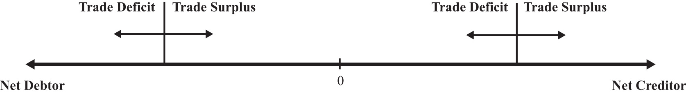

A quick reading of business and financial newspapers and magazines often reveals a number of misunderstandings about economic relationships. One of the most notable is the widespread conviction that trade deficits are a troubling economic condition that indicates weakness in an economy, while trade surpluses are a sign of strength for an economy. Although these beliefs are well founded in some circumstances, they are not valid as a general principle. A careful look at the implications of trade imbalances reveals that trade deficits can, at times, be an indicator of rising economic stature, while trade surpluses can be associated with economic disaster. In many other cases, perhaps most, trade imbalances are simply benign—that is, they do not represent a serious threat or imply a notable benefit.
There are several reasons why misunderstandings about trade imbalances persist. The first problem relates to the terminology. A deficit, regardless of the context, sounds bad. To say that a business’s books are in deficit, that a government’s budget is in deficit, or that a country’s trade balance is in deficit, simply sounds bad. A surplus, in contrast, sounds pretty good. For a business, clearly we’d prefer a surplus, to be in the black, to make a profit. Likewise, a budget surplus or a trade surplus must be good as well. Lastly, balance seems either neutral or possibly the ideal condition worth striving for. From an accountant’s perspective, balance is often the goal. Debits must equal credits, and the books must balance. Surely, this terminology must contribute to the confusion, at least in a small way, but it is not accurate in describing trade imbalances in general.
A second reason for misunderstandings, especially with regard to deficits, may be a sense of injustice or inequity because foreigners are unwilling to buy as many of our goods as we buy of theirs. Fairness would seem to require reciprocity in international exchanges and therefore balanced trade. This misunderstanding could be easily corrected if only observers were aware that a country’s balance of payments, which includes trade in goods, services, and assets, is always in balance. There are no unequal exchanges even when a country runs a trade deficit.
A third reason for the misunderstanding is that trade deficits are indeed bad for some countries in some situations while surpluses are sometimes associated with good economic outcomes. One needs only to note the many international debt crises experienced by countries after they had run persistent and very large trade deficits. One could also look at the very high growth rates of Japan in the 1980s and China in the last few decades for examples of countries with large trade surpluses that have seemingly fared very well.
However, despite these examples, one should not conclude that any country that has a trade deficit or whose trade deficit is rising is necessarily in a potentially dangerous situation; nor should we think that just because a country has a trade surplus that it is necessarily economically healthy. To see why, we must recognize that trade imbalances represent more than just an imbalance in goods and services trade.
Any imbalance in goods and services trade implies an equal and opposite imbalance in asset trade. When a country runs a trade deficit (more exhaustively labeled a current account deficit), it is also running a financial account surplus; similarly, a trade surplus corresponds to a financial account deficit. Imbalances on the financial account mean that a country is a net seller of international assets (if a financial account surplus) or a net buyer of international assets (if a financial account deficit).
One way to distinguish among good, bad, or benign trade imbalances is to recognize the circumstances in which it is good, bad, or benign to be a net international borrower or lender, a net purchaser, or seller of ownership shares in businesses and properties.
An evaluation of a country’s trade imbalance should begin by identifying the country’s net international asset or investment position. The investment position is like a balance sheet in that it shows the total holdings of foreign assets by domestic residents and the total holdings of domestic assets by foreign residents at a point in time. In the International Monetary Fund’s (IMF) financial statistics, these are listed as domestic assets (foreign assets held by domestic residents) and domestic liabilities (domestic assets owned by foreign residents). In contrast, the financial account balance is more like an income statement that shows the changes in asset holdings during the past year. In other words, the international asset position of a country consists of stock variables while the financial account balance consists of flow variables.
A country’s net international investment balance may either be in a debtor position, a creditor position, or in balance. If in a creditor position, then the value of foreign assets (debt and equity) held by domestic residents exceeds the value of domestic assets held by foreigners. Alternatively, we could say that domestic assets exceed domestic liabilities. If the reverse is true, so that domestic liabilities to foreigners exceed domestic assets, then the country would be called a debtor nation.
Asset holdings may consist of either debt obligations or equity claims. Debt consists of IOUs in which two parties sign a contract agreeing to an initial transfer of money from the lender to the borrower followed by a repayment according to an agreed schedule. The debt contract establishes an obligation for the borrower to repay principal and interest in the future. Equity claims represent ownership shares in potentially productive assets. Equity holdings do not establish obligations between parties, at least not in the form of guaranteed repayments. Once ownership in an asset is transferred from seller to buyer, all advantages and disadvantages of the asset are transferred as well.
Debt and equity obligations always pose several risks. The first risk with debt obligations is the risk of possible default (either total or partial). To the lender, default risk means that the IOU will not be repaid at all, that it will be repaid only in part, or that it is repaid over a much longer period than originally contracted. To the borrower, the risk of default is that future borrowing will likely become unavailable. In contrast, the advantage of default to the borrower is that not all the borrowed money is repaid.
The second risk posed by debt is that the real value of the repayments may be different than expected. This can arise because of unexpected inflation or unexpected currency value changes. Consider inflation first. If inflation is higher than expected, then the real value of debt repayment (if the nominal interest rate is fixed) will be lower than originally expected. This will be an advantage to the borrower (debtor), who repays less in real terms, and a disadvantage to the lender (creditor), who receives less in real terms. If inflation turns out to be less than expected, then the advantages are reversed.
Next, consider currency fluctuations. Suppose a domestic resident, who receives income in the domestic currency, borrows foreign currency in the international market. If the domestic currency depreciates, then the value of the repayments in domestic currency terms will rise even though the foreign currency repayment value remains the same. Thus currency depreciations can be harmful to borrowers of foreign currency. A similar problem can arise for a lender. Suppose a domestic resident purchases foreign currency and then lends it to a foreign resident (note in this case the domestic resident is saving money abroad). Afterward, if the domestic currency appreciates, then foreign savings, once cashed in, will purchase fewer domestic goods and the lender will lose.
Similarly, various risks arise with equity purchases internationally because the asset’s rate of return may turn out to be less than expected. This can happen for a number of different reasons. First, if the equity purchases are direct investment in a business, then the return on that investment will depend on how well the business performs. If the market is vibrant and management is good, then the investment will be profitable. Otherwise, the rate of return on the investment could be negative; the foreign investor could lose money. In this case, all the risk is borne by the investor, however. The same holds for stock purchases. Returns on stocks may be positive or negative, but it is the purchaser who bears full responsibility for the return on the investment. As with debt, equity purchases can suffer from exchange rate risk as well. When foreign equities are purchased, their rate of return in terms of domestic currency will depend on the currency value. If the foreign currency in which assets are denominated falls substantially in value, then the value of those assets falls along with it.
There are four possible situations that a country might face. It may be
Figure 14.6 "International Asset Positions" depicts a range of possible international investment positions. On the far left of the image, a country would be a net debtor nation, while on the far right, it would be a net creditor nation. A trade deficit or surplus run in a particular year will cause a change in the nation’s asset position assuming there are no capital gains or losses on net foreign investments. A trade deficit would generally cause a leftward movement in the nation’s investment position implying either a reduction in its net creditor position or an increase in its net debtor position. A trade surplus would cause a rightward shift in a country’s investment position implying either an increase in its net creditor position or a decrease in its net debtor position.
Figure 14.6 International Asset Positions
An exception to this rule occurs whenever there are changes in the market value of foreign assets and when the investment position is calculated using current market values rather than original cost. For example, suppose a country has balanced trade in a particular year and is a net creditor nation. If the investment position is evaluated using original cost, then since the current account is balanced, there would be no change in the investment position. However, if the investment position is evaluated at current market values, then the position can change even with balanced trade. In this case, changes in the investment position arise due to capital gains or losses. Real estate or property valuations may change, portfolio investments in stock markets may rise or fall, and currency value changes may also affect the values of national assets and liabilities.
The pros and cons of a national trade imbalance will depend on which of the four situations describes the current condition of the country. We’ll consider each case in turn next.
This is perhaps the most common situation in the world, or at least this type of case gets the most attention. The main reason is that large trade deficits run persistently by countries, which are also large debtor nations, can eventually be unsustainable. Examples of international debt crises are widespread. They include the third world debt crisis of the early 1980s, the Mexican crisis in 1994, and the Asian crisis in 1997.
However, not all trade deficits nor all debtor countries face eventual default or severe economic adjustment. Indeed, for some countries, a net debtor position with current account deficits may be an ideal economic situation. To distinguish the good cases from the bad requires us to think about situations in which debt is good or bad.
As mentioned earlier, a current account deficit means that a country is able to spend more on goods and services than it produces during the year. The additional spending can result in increases in consumption, investment, and/or government spending. The country accomplishes this as a net debtor country by borrowing from the rest of the world (incurring debt), or by selling some of its productive assets (equities).
Let’s consider a few scenarios.
First, suppose the current account deficit is financed by borrowing money from the rest of the world (i.e., incurring debt). Suppose the additional spending over income is on consumption and government goods and services. In this case, the advantage of the deficit is that the country is able to consume more private and public goods while it is running the deficit. This would enhance the nation’s average standard of living during the period the deficit is being run. The disadvantage is that the loans that finance the increase in the standard of living must be repaid in the future. During the repayment period, the country would run a current account surplus, resulting in national spending below national income. This might require a reduction in the country’s average standard of living in the future.
This scenario is less worrisome if the choices are being made by private citizens. In this case, individuals are freely choosing to trade off future consumption for current consumption. However, if the additional spending is primarily on government goods and services, then it will be the nation’s taxpayers who will be forced to repay government debt in the future by reducing their average living standards. In other words, the future taxpayers’ well-being will be reduced to pay for the extra benefits accruing to today’s taxpayers.
Possible reductions in future living standards can be mitigated or eliminated if the economy grows sufficiently fast. If national income is high enough in the future, then average living standards could still rise even after subtracting repayment of principal and interest. Thus trade deficits are less worrisome when both current and future economic growth are more rapid.
One way to stimulate economic growth is by increasing spending on domestic investment. If the borrowed funds that result when a country runs a current account deficit are used for investment rather than consumption or if the government spending is on infrastructure, education, or other types of human and physical capital, then the prospects for economic growth are enhanced.
Indeed, for many less-developed countries and countries in transition from a socialist to capitalist market, current account deficits represent potential salvation rather than a curse. Most poor countries suffer from low national savings rates (due to low income) and inadequate tax collection systems. One obvious way to finance investment in these countries is by borrowing from developed countries that have much higher national savings rates. As long as the investments prove to be effective, much more rapid economic growth may be possible.
Thus trade deficits for transitional and less-developed economies are not necessarily worrisome and may even be a sign of strength if they are accompanied by rising domestic investment and/or rising government expenditures on infrastructure.
The main problem with trade deficits arises when they result in a very large international debt position. (Arguably, one could claim that international debt greater than 50 percent of GDP is very large.) In this circumstance, it can lead to a crisis in the form of a default on international obligations. However, the international debt position figures include both debt and equities, and only the debt can be defaulted on. Equities, or ownership shares, may yield positive or negative returns but do not represent the same type of contractual obligations. A country would never be forced to repay foreign security holders for its losses simply because its value on the market dropped. Thus a proper evaluation of the potential for default should only look at the net international “debt” position after excluding the net position on equities.
Default becomes more likely the larger the external debt relative to the countries’ ability to repay. Ability to repay can be measured in several ways. First, one can look at net debt relative to GDP. Since it measures annual national income, GDP represents the size of the pool from which repayment of principal and interest is drawn—the larger the pool, the greater the ability of the country to repay. Alternatively, the lower the country’s net debt to GDP ratio, the greater the country’s ability to repay.
A second method to evaluate ability to repay is to consider net debt as a percentage of exports of goods and services. This is especially relevant when international debt is denominated in foreign currencies. In this case, the primary method to acquire foreign currencies to make repayment of debt is through the export of goods and services. (The alternative method is to sell domestic assets.) Thus the potential for default may rise if the country’s ratio of net external debt to exports is larger.
Notice, though, that the variable to look at to evaluate the risk of default is the net debt position, not the trade deficit. The trade deficit merely reveals the change in the net debt position during the past year and does not record total outstanding obligations. In addition, a trade deficit can be run even while the net “debt” position falls. This could occur if the trade deficit is financed primarily with net equity sales rather than net debt obligations. Thus the trade deficit, by itself, does not reveal a complete picture regarding the potential for default.
Next, we should consider what problems are associated with default. Interestingly, it is not really default itself that is immediately problematic but the actions taken to avoid default. If default on international debt does occur, international relationships with creditor countries would generally suffer. Foreign banks that are not repaid on past loans will be reluctant to provide loans in the future. For a less-developed country that needs foreign loans to finance productive investment, these funds may be cut off for a long period and thus negatively affect the country’s prospects for economic growth. On the positive side, default is a benefit for the defaulting country in the short-run since it means that borrowed funds are not repaid. Thus the country enjoys the benefits of greater spending during the previous periods when trade deficits are run but does not have to suffer the consequences of debt repayment. With regard to the country’s international debt position, default would cause an immediate discrete reduction in the country’s debt position.
The real problem arises when economic shocks suddenly raise external obligations on principal and interest, making a debt that was once sustainable suddenly unsustainable. In these cases, it is the effort made to avoid default that is the true source of the problem.
Inability to repay foreign debt arises either if the value of payments suddenly increases or if the income used to finance those payments suddenly falls. Currency depreciations are a common way in which the value of repayments can suddenly rise. If foreign debt is denominated in foreign currency, then domestic currency depreciation implies an appreciation in the value of external debt. If the currency depreciation is large enough, a country may become suddenly unable to make interest and principal repayments. Note, however, that if external debt were denominated in domestic currency, then the depreciation would have no effect on the value of interest and principal repayments. This implies that countries with large external debts are in greater danger of default if (1) their currency value is highly volatile and (2) the external debt is largely denominated in foreign currency.
A second way in which foreign interest obligations can suddenly rise is if the obligations have variable interest rates and if the interest rates suddenly rise. This was one of the problems faced by third world countries during the debt crisis in the early 1980s. Loans received from the U.S. and European banks carried variable interest rates to reduce the risk to the banks from unexpected inflation. When restrictive monetary policy in the United States pushed up U.S. interest rates, interest obligations by foreign countries also suddenly rose. Thus international debt with variable interest rates potentially raises the likelihood of default.
Default can also occur if a country’s ability to repay suddenly falls. This can occur if the country enters into a recession. Recessions imply falling GDP, which reduces the pool of funds available for repayment. If the recession is induced by a reduction in exports, perhaps because of recessions in major trading partner countries, then the ability to finance foreign interest and principal repayments is reduced. Thus a recession in the midst of a large international debt position can risk potential default on international obligations.
But what are the problems associated with a sudden increase in debt repayment if default on the debt does not occur? The problem, really, is that the country might suddenly have to begin running current account surpluses to maintain repayments of its international obligations. Remember that trade deficits mean that the country can spend more than its income. By itself, that’s a good thing. Current account surpluses, though, mean that the country must spend less than its income. That’s the bad thing, especially if it occurs in the face of an economic recession.
Indeed, this is one of the problems the U.S. economy is facing in the midst of the current recession. As the U.S. GDP began to fall in the fall of 2008, the U.S. trade deficit also fell. For the “trade deficits are bad” folks, this would seem to be a good thing. However, it really indicated that not only was U.S. production falling but, because its trade deficit was also falling, its consumption was falling even faster. In terms of standard of living, the drop in the U.S. trade deficit implied a worsening of the economic conditions of its citizens.
However, since this problem arises only when a net debtor country runs a current account surplus, we’ll take up this case in the next section. Note well though that the problems associated with a trade deficit run by a net debtor country are generally not visible during the period in which the trade deficit is run. It is more likely that a large international debt will pose problems in the future if or when substantial repayment begins.
In summary, the problem of trade deficits run by a net debtor country is more worrisome
The situation is benign or beneficial if the reverse occurs.
This case generally corresponds to a country in the process of repaying past debt. Alternatively, foreigners may be divesting themselves of domestic equity assets (i.e., selling previously purchased equities, like stocks and real estate, back to domestic residents). In either case, the trade surplus will reduce the country’s net debtor position and will require that domestic spending is less than national income. This case is especially problematic if it arises because currency depreciation has forced a sudden change in the country’s required repayments on international debt. This is the outcome when a series of trade deficits proves to be unsustainable. What unsustainability means is that the deficits can no longer be continued. Once external financing is no longer available, the country would not have the option to roll over past obligations. In this case, in the absence of default, the country’s net repayment on current debt would rise and push the financial account into deficit and hence the trade account into surplus.
When this turnaround occurs rapidly, the country suddenly changes from a state in which it spends more on consumption, investment, and government than its income to a state in which it spends less on these items than its income. Even if GDP stayed the same, the country would suffer severe reductions in its standard of living and reductions in its investment spending. The rapid reduction in domestic demands is generally sufficient to plunge the economy into a recession as well. This reduction in GDP further exacerbates the problem.
This problematic outcome is made worse nationally when most of the debt repayment obligations are by the domestic government or if the external obligations are government-backed. A government that must suddenly make larger than expected repayments of debt must finance it either by raising taxes or by reducing government benefits. The burden of the repayment is then borne by the general population because it must all come from taxpayers. Exactly who suffers more or less will depend on the nature of the budget adjustments, although it often seems that poorer segments of the population bear the brunt of the adjustment costs.
If the sudden increase in debt repayment were primarily by private firms, then the burdens would fall on the associates of those firms rather than the general population. If this occurs on a small scale, we can view this as normal adjustments in a free market system: some firms always go bust, forcing dislocations of labor and capital. The general population in this case would not bear the burden of adjustment unless they are affiliated with the affected firms.
However, even if the debt repayment burden is private and even if the government had not previously guaranteed that debt, the government may feel compelled to intervene with assistance if many private firms are negatively affected. This will perhaps be even more likely if the affected private debt is held by major national banks. Default by enough banks can threaten the integrity of the banking system. Government intervention to save the banks would mean that the general population would essentially bear the burdens of private mistakes.
This kind of rapid reversal is precisely what happened to Indonesia, Thailand, Malaysia, and South Korea in the aftermath of the Asian currency crisis in 1997. Afterward, these countries recorded substantial current account surpluses. These surpluses should not be viewed as a sign of strong vibrant economies; rather, they reflect countries that are in the midst of recessions, struggling to repay their past obligations, and that are now suffering a reduction in average living standards as a consequence.
The most severe consequences of a current account surplus as described above arise when the change from trade deficit to surplus is abrupt. If, on the other hand, the transition is smooth and gradual, then the economy may not suffer noticeably at all. For example, consider a country that has financed a period of extra spending on infrastructure and private investment by running trade deficits and has become a net international debtor nation. However, once the investments begin to take off, fueling rapid economic growth, the country begins to repay more past debt than the new debt that it incurs each period. In this case, the country could make a smooth transition from a trade deficit to a trade surplus. As long as GDP growth continued sufficiently fast, the nation might not even need to suffer reductions in its average living standards even though it is spending less than its income during the repayment period.
In summary, the situation of a net debtor nation running current account surpluses is more worrisome if
The situation is benign or beneficial if the reverse occurs.
A net creditor country with trade surpluses is channeling savings to the rest of the world either through lending or through the purchase of foreign productive assets. The situation is generally viewed as prudent but may have some unpleasant consequences. Recall that a country with a trade surplus is spending less on consumption, investment, and government combined than its national income. The excess is being saved abroad. Net creditor status means that the country has more total savings abroad than foreigners have in their country.
The first problem may arise if the surplus corresponds to the substitution of foreign investment for domestic investment. In an era of relatively free capital mobility, countries may decide that the rate of return is higher and the risk is lower on foreign investments compared to domestic investments. If domestic investment falls as a result, future growth prospects for the country are reduced as well. This situation has been a problem in Russia and other transition economies. As these economies increased their private ownership of assets, a small number of people became extremely wealthy. In a well-functioning economy with good future business prospects, wealth is often invested internally helping to fuel domestic growth. However, in many transition economies, wealth holders decided that it was too risky to invest domestically because uncertainty about future growth potential was very low. So instead, they saved their money abroad, essentially financing investment in much healthier and less risky economies.
China is another creditor country running a trade surplus today. It is, however, in a different situation than Russia or the transition economies in the 1990s. China’s internal investment rate is very high and its growth rate has been phenomenal over the past twenty years or more. The fact that it has a trade surplus means that as a nation it is saving even more than necessary to finance its already high investment levels. The excess it is lending abroad, thereby raising its international creditor position. (See Chapter 12 "Introductory Finance Issues: Current Patterns, Past History, and International Institutions" for more details.) If it was to redirect that saving domestically, it may not be able to fuel additional growth since their investment spending is already so high. Their trade surplus also means that its average standard of living is well below what is possible because it is saving the surplus abroad rather than spending it on consumption or government goods at home.
A second problem arises even if domestic investment remains high. With domestic investment kept high, the cost of the large surpluses must be felt as a reduction in consumption and government spending. In this case, a large trade surplus leads to a reduction in average living standards for the country. This is a point worth emphasizing. Countries that run trade surpluses suffer a reduction in living standards, not an increase, relative to the case of balanced trade.
Another potential problem with being a net creditor country is the risk associated with international lending and asset purchases. First of all, foreign direct investments may not pay off as hoped or expected. Portfolio investments in foreign stock markets can suddenly be reduced in value if the foreign stock market crashes. On international loans, foreign nations may default on all or part of the outstanding loans, may defer payments, or may be forced to reschedule payments. This is a more likely event if the outstanding loans are to foreign countries with national external debts that may prove unsustainable. If the foreign country suffers rapid currency depreciation and if the foreign loans are denominated in domestic currency, then the foreign country may be forced to default. Defaults may also occur if the foreign debtor countries suffer severe recessions. The creditor nation in these cases is the one that must suffer the losses.
It was this situation that was especially serious for the United States at the onset of the third world debt crisis in the early 1980s. At that time, a number of large U.S. banks had a considerable proportion of their asset portfolios as loans to third world countries. Had these countries defaulted en masse, it would have threatened the solvency of these banks and could have led to a serious banking crisis in the U.S. economy.
Alternatively, suppose the surplus country has made external loans in the foreign countries’ currency. If the foreign currency depreciates, even if only gradually, then the value of the foreign assets falls in terms of the domestic currency. The realized rates of return on these assets could then become negative, falling far short of returns on comparable domestic assets.
This is the dilemma that China faces today. The Chinese government has accumulated almost $1 trillion of U.S. Treasury bonds as a result of its persistent current account surpluses over the past decade. All of this debt is denominated in U.S. dollars, making it subject to exchange rate risk. If the Chinese relent to U.S. pressure to allow their fixed currency value appreciate to the U.S. dollar, then the value of these U.S. assets falls in value and reduces their future returns. The Chinese are also worried about the potential for future U.S. inflation due to the expansionary monetary policy used during the current economic crisis. If inflation does arise in the future, the value of the trillion dollars of foreign debt would also be reduced. This situation is epitomized with a popular parable that says, “If you owe me a thousand dollars, then you have a problem, but if you owe me a million dollars, then I have a problem.” Even though the United States is the debtor and the Chinese the creditor, the Chinese now have a problem because they may have lent too much to the United States.
In summary, the situation of a net creditor nation running current account surpluses is worrisome if the
The situation is benign or beneficial if the reverse occurs.
In general, a deficit run by a country that is a net creditor is least likely to be problematic. Essentially, this describes a country that is drawing down previously accumulated savings. The deficit also implies that the country is spending more than its income. This situation is especially good if it allows the country to maintain living standards during a recession. This case would also be good if a country with a rapidly aging population is drawing down previous savings to maintain average living standards.
The current account deficit can cause problems if as in case one, the deficit corresponds to falling investment and increases in consumption and government expenditures. If these changes occur while the economy continues to grow, then it may indicate potential problems for future economic growth. However, if the same changes occur while the economy is in a recession, then the effect would be to maintain average living standards by drawing down external savings. If this occurs only during the recession, then the long-term effect on growth would be mitigated.
This case can be a problem if the net creditor position is extremely large. A large amount of foreign savings can always potentially drop in value given currency fluctuations as described above in case three. However, the current account deficit only serves to reduce this potential problem since it reduces the country’s net creditor position.
In summary, the situation of a net creditor nation running current account deficits is worrisome if
The situation is benign or beneficial if the reverse occurs.
Suppose the hypothetical country of Avalon has a current account deficit of $20 billion this year. From the two scenarios listed in each part below, identify which scenario would make this deficit more worrisome to an economic analyst and which scenario would be less worrisome. Briefly explain why.
Scenario 1: Avalon’s GDP is $80 billion dollars per year.
Scenario 2: Avalon’s GDP is $800 billion per year.
Scenario 1: Avalon is a net debtor country.
Scenario 2: Avalon is a net creditor country.
Scenario 1: Avalon’s annual consumption spending is 50 percent of GDP.
Scenario 2: Avalon’s annual consumption spending is 90 percent of GDP.
Scenario 1: Avalon’s GDP grew 1 percent last year.
Scenario 2: Avalon’s GDP grew 10 percent last year.
Below are the economic data for five fictitious countries running trade deficits. Dollar amounts are in billions, and percentages are relative to GDP.
| Alpha (%) | Beta (%) | Gamma (%) | Delta (%) | Epsilon (%) | |
|---|---|---|---|---|---|
| GDP | $260 | $340 | $135 | $400 | $840 |
| Trade Deficit (TD) | 9.1 | 9.7 | 2.5 | 5.7 | 6.0 |
| Projected GDP Growth | +2.0 | +10.2 | +3.0 | +1.0 | +5.5 |
| Net International Investment Position (IIP) | 75 debtor | 30 creditor | 20 debtor | 60 debtor | 5 debtor |
| Domestic Investment (I) | 18 | 35 | 16 | 13 | 27 |
Suppose you work for the International Monetary Fund, and it has asked you to assess which two of these five countries’ trade deficits are most likely to pose future repayment problems. Provide a brief explanation justifying your assessment.
Consider the fictitious country of Malamar. Economic data for Malamar are presented in the table below. Note that Malamar is currently running a trade deficit of $60 billion.
| Trade Deficit (TD) | $60 billion |
| GDP | $1,000 billion |
| GDP Growth—Past 3 Years (Growth −) | −1.2% |
| Projected GDP Growth—Next 3 Years (Growth +) | 8.5% |
| Net International Investment Position (IIP) | −$800 billion (debtor) |
| Domestic Investment (I) | $350 billion |
In the table below, reference the above data (either directly or in combination) in the first column and indicate in the second column whether this information tends to make Malamar’s deficit more worrisome or less worrisome. One example is provided to illustrate.
| Data | More or Less Worrisome |
|---|---|
| TD/GDP = 6 percent | More |
|
|
|
|
|
|
|
|
|
|
|
|
Consider the following statements concerning current account balances. Explain in what sense, if any, the statements are valid. In what sense, if any, are the statements misguided?